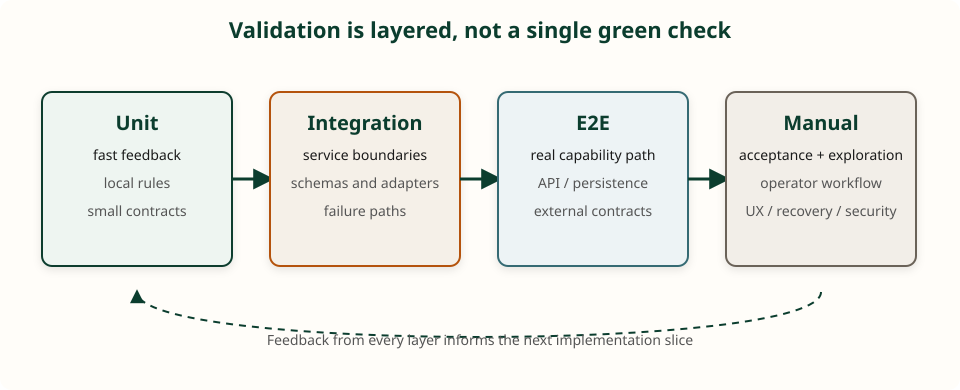
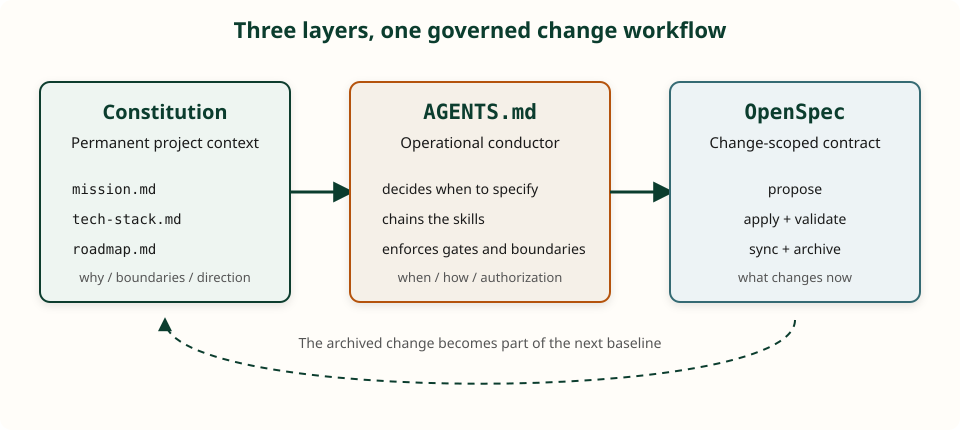

Executive Summary (TL;DR)
- The Core Problem: Unconstrained "vibe coding" quickly degenerates in production environments because long or underspecified conversational workflows can suffer from context overload, positional attention effects, and instruction drift, resulting in stack drift, unwanted dependencies, and plausible but incorrect changes.
- The Triad Architecture: Systemic stability is enforced by separating concerns across three decoupled layers: a permanent Project Constitution (mission, stack, roadmap), an operational conductor (AGENTS.md), and task-scoped delta contracts (OpenSpec).
- The Reading Spectrum: The engineer does not waste cognitive bandwidth manually reading repetitive boilerplate; manual scrutiny is concentrated strictly on core domain invariants and state contracts, while automated harnesses (strict typing, mutation tests, and negative constraints) bound the execution perimeter.
- Brownfield-First Pragmatism: Rather than demanding an impossible upfront audit of massive legacy systems, OpenSpec operates strictly via incremental delta specifications (ADDED, MODIFIED, REMOVED) that organically map system architecture sprint by sprint upon archival.
A while ago, Andrej Karpathy coined the term vibe coding for that habit of casually firing prompts, accepting whatever the tool spits back, and moving along as long as it "compiles." That works for throwaway prototypes. In a production service with shared GPUs, strict HTTP contracts, and downstream datalake clients, vibe turns into compounding debt: the agent invents stacks, inflates scope, writes outside the repository, and forgets agreements made yesterday.
This illusion clashed with one of the most heated debates in the industry: the controversy surrounding Boris Cherny (Anthropic engineer and creator of Claude Code) and the provocative phrase “coding is solved.” The developer community reacted strongly, yet the core argument is undeniable: the mechanical emission of syntax has ceased to be software engineering's primary bottleneck. If generating code has become cheap and instantaneous, the center of gravity has shifted toward what truly sustains a system — architecture, scale, complex debugging, and defining precisely what to build.
When syntax generation is essentially commoditized, the central failure mode is no longer a syntax error, but a semantic divergence between the architect's mental model and the model's probabilistic assumptions — a breakdown in Intent Fidelity. In Spec-Driven Development, our relationship with AI shifts fundamentally: the engineer authoritatively specifies the formal intent, domain constraints, and input/output contracts in Markdown, while the coding agent acts like a semantic compiler, translating high-level contracts into executable code. If the intent at the input is ambiguous or unanchored, it can produce the wrong system at terrifying speed.
What changed in my everyday practice wasn't "using more AI." It was writing the project's permanent memory in the place the workflow is designed to make the agent consult, transforming change workflows into a repeatable pipeline. Without this, every chat session restarts from scratch — and the model happily fills the vacuum with overconfident guesswork.
In my experience, Cursor has delivered the best return on investment of any AI coding tool I have used. This is a personal, non-sponsored assessment rather than a controlled comparison or a claim that Cursor is universally superior. Its value for me is that it makes repository-aware agent work practical by bringing project context, rules, skills, editing, and validation into the same loop. The tool is only the multiplier; the durable advantage comes from the constitution, the workflow, and the engineer's ability to evaluate the result.
The Methodology Cycle: The Engineer as Pilot and Architect
Workflow Summary: AI-assisted software development does not mean blindly delegating solutions. It means operating as a critical architect and pilot through an iterative 4-stage lifecycle: Understand the Problem → Evaluate Candidate Architectures → Loop (Implement & Learn → Validate) → Deliver. The velocity and efficacy of this workflow are directly proportional to the engineer's technical depth — and the implementation loop itself becomes an active engine for continuous learning and repertoire expansion.
Breakdown of the 4 Stages
1. Understand the Problem
- Before typing a substantial implementation prompt: define enough of the functional requirements, use cases, boundaries, and business constraints to choose the next responsible step ("The hardest single part of building a software system is deciding precisely what to build" — Fred Brooks).
- Without problem clarity: AI will simply produce plausible-sounding answers for the wrong problem, automating waste at unprecedented speed.
2. Evaluate Candidate Architectures
- Multiple Solutions: Never accept the first suggestion blindly. Use AI to surface and contrast 2 to 3 architectural designs (e.g., event-driven vs. synchronous processing, deterministic code vs. LLM heuristics).
- Trade-off Analysis: Weigh latency, infrastructure cost, maintainability, and the cost of future change — as Grady Booch emphasized in his foundational work on architecture, modular decomposition exists primarily to control the cost and cognitive complexity of software evolution. The final decision always rests with the human engineer.
3. Loop: Implement & Learn → Validate (Continuous Execution)
- Atomic Modular Implementation: Avoid asking for entire systems in one prompt. Decompose architecture into modular tasks, requesting clean, focused, and strongly typed code.
-
Active Learning & Domain Scrutiny:
- Scrutinize the Core Domain: Treat AI as an interactive pair programmer on non-trivial logic. Never accept core business invariants, database migrations, or critical security boundaries without mastering their mechanics line by line.
- Challenge patterns and decisions: Whenever the agent suggests a library, modern native primitive, or concurrency pattern, probe why it chose it over alternatives to sharpen your own architectural mental model.
- Knowledge Feedback Loop: Implementing with AI becomes an active engine for continuous technical renewal, keeping your understanding of modern frameworks and language idioms razor-sharp.
-
Immediate and Layered Validation: Testing is not a final ceremony in this workflow; it is the feedback loop that allows the agent and engineer to converge safely. I value automated tests for fast, repeatable regression detection, and manual validation for the aspects that cannot be fully captured by assertions.
- Run unit and integration tests before proceeding to the next unit.
- Run end-to-end (E2E) tests at capability boundaries, covering the real path through the relevant services, APIs, persistence, and external contracts.
- Verify linters, static typing, and actively probe edge cases models commonly overlook.
- After the automated suite is green, perform manual acceptance and exploratory validation against the change's acceptance criteria. Exercise the real user or operator workflow, failure recovery, observable behavior, and security-sensitive paths.
- On failure, feed back the error with complete context and iterate in the loop until fully compliant.

4. Deliver
- Communication and Handoff: Document architectural decisions, explain rationales, and generate self-explanatory Pull Requests with verified acceptance criteria.
The Velocity Catalyst: An Up-to-Date Technical Repertoire
For this workflow to be fast, staying technically current is non-negotiable.
Artificial intelligence amplifies execution capacity, but it cannot replace the developer's foundational knowledge:
- Surgical Prompting: Engineers who know modern tools, libraries, and language primitives formulate crisp instructions, eliminating round-trips.
- Hallucination Detection: Only technically updated professionals quickly spot obsolete patterns, deprecated APIs, or fragile architectural choices proposed by the model.
- Decision Velocity: Deep familiarity with the ecosystem allows discarding unviable architectures in minutes, avoiding days trapped in sterile implementation loops.
- Vertical Anchoring (T-Shaped Profile): An AI agent's broad horizontal coverage only translates into robust software when anchored by the engineer's deep vertical expertise.
Supporting Tools & Automations
- Reusability via Skills and Slash Commands: Standardized prompts for frequent workflows (generating semantic commits via git diff, documenting PRs, or filing backlog cards). Skills reduce avoidable variance and make the intended procedure inspectable.
- Automated Code Review: Using CodeRabbit, specialized reviewer agents, and linters as an automated second line of defense to audit bugs, performance bottlenecks, and security flaws before final delivery.
The Engineering Shift: From Reading Code to Imposing Extreme Constraints
This shift isn't about adopting cooler tools; it is a fundamental break in how engineering discipline is enforced, echoed by veteran voices across the industry.
In July 2026, Uncle Bob (Robert C. Martin) sparked widespread debate across the engineering community. The sequence matters: on July 22, he summarized the position this way:
“I don't read the code AI produces, and I test and constrain it so thoroughly that I don't have to pray.”
— Robert C. Martin (post on X, July 22, 2026; quoted and discussed in Gradient Rage)
The following day, he expressed the same strategy more provocatively:
“My current strategy is to not read any of the code written by my agents.”
— Robert C. Martin (Post on X, July 23, 2026; analysis on Gradient Rage)
A broader interpretation of Clean Code is that it should keep accidental complexity out of the way so engineers can focus on thinking and deciding. This perspective is compatible with a broader economic argument made by Fabio Akita: when the marginal cost of fixing code approaches zero, bureaucratic manual review loops may become software's costliest friction. DHH's statement supports the narrower claim that human-only review of critical code may be insufficient; the need to combine human comprehension with automated invariant checks is my engineering conclusion (DHH on X, Sept 2026).
The Reading Spectrum: Where to Read vs. Where to Automate
This brings us to the apparent contradiction: Should engineers read agent-generated code or not? The answer is not a binary dogma, but a calibrated decision matrix based on architectural risk:
- The Semantic Core (Line-by-Line Scrutiny Paired with Automated Invariants): Business rules, state transition invariants, public API contracts, data migrations, and critical security boundaries. Here, delegating without line-by-line comprehension is engineering malpractice. Human review is combined with automated invariant tests, property-based testing, and schema validation because neither manual inspection nor generated tests are sufficient on their own.
- The Syntactic Perimeter (Extreme Constraints Replace Reading): Repetitive boilerplate, DTO transformations, adapter plumbing, and synthetic test suites. Reading thousands of lines of mechanical plumbing provides a false sense of security — human eyes tire quickly. Generated tests are not treated as independent evidence by default; mutation tests, contract tests, property-based tests, linter assertions, and negative constitutional rules provide additional checks. The harness bounds risk; it does not prove correctness universally.
My position rejects both reckless vibe coding (reading nothing, validating nothing) and dogmatic manual inspection (wasting cognitive bandwidth on repetitive plumbing). When extreme behavioral constraints and architectural specifications tightly bind the perimeter, line-by-line reading of boilerplate is an expensive illusion. But the architectural model itself remains non-negotiably human. Automation replaces syntax reading; it never absolves architectural ownership.
To operate this lifecycle frictionlessly without relying on manual memory every single session, the repository itself must supply the stable foundation. This is where the three core pillars of this article enter: the Constitution, AGENTS.md, and OpenSpec.
1. Constitution Before Features
In Spec-Driven Development (SDD), the idea of a project constitution is straightforward: three stable documents that are not the feature spec of the week. In our repository, they live in docs/constitution/. The table below serves as the map; what matters is what cannot be missing from each.
| File | Question it answers |
|---|---|
| mission.md | Why this exists, who uses it, what is in scope, and what is strictly out of scope |
| tech-stack.md | Stack, virtual environments, GPU/CPU constraints, testing rules — and what not to use |
| roadmap.md | Current phase vs. what comes next (macro view; details belong to change specs) |
To make the pattern reusable, this site also includes a small sanitized public example containing a project constitution and an AGENTS.md. It is a teaching fixture, not a copy of the production repository: adapt the boundaries, commands, tests, and approval rules to the runtime and risk profile of your own system.
What Must Be in the Mission
A mission without named users turns into empty marketing. The agent needs to know whom it is building for — and in this service, users are technical roles, not end-user citizens. An actual excerpt from our docs/constitution/mission.md:
## Users
| Who | Role |
|---|---|
| **Datalake Scanner** | Primary HTTP client… |
| **GPU Operator / Owner** | Starts, stops, and monitors gateway + decider… |
Not users of this repo: judges, plaintiffs, lawyers…
## Out of Scope
- MinIO, external case management systems, raw chunk scanners
- Production threshold heuristics and unrelated operational policies…Example: named technical roles + explicit out-of-scope declarations.
- Why — the core problem that justifies the repository's existence.
- Users — who consumes and who operates the system; who is explicitly not a user.
- Scope — what this specific codebase is responsible for delivering.
- Out of Scope — the list that kills hallucinations. Without it, the agent will "complete" your product single-handedly.
What Must Be in the Tech Stack
A tech stack document is not an installation tutorial. It is a technical contract — especially the Do Not Use table. From docs/constitution/tech-stack.md:
## Do Not Use
| Avoid | Use Instead |
|---|---|
| `pip` / Poetry / Conda | **uv** + `.venv` / `.venv-julia` |
| Both LLMs inside the same process | HTTP Gateway + dedicated backends |
| vLLM, Ollama, llama.cpp… | `decider.serve` (+ Julia adapter) |
| MinIO, boto, Airflow, case client… | Managed upstream in the datalake |
| Writing outside repository root | Paths restricted under classifier root |Example: stack constraints structured as avoid → use instead.
- Runtime & Dependencies — language versions, uv, virtual environments (and why there are two).
- Service Roles — gateway / decider / Julia; CPU vs. GPU allocation.
- Launch & Testing — execution scripts, Docker compose, smoke and quality test suites.
- Do Not Use — the single section that most effectively suppresses unwanted agent creativity.
- Process — OpenSpec defaults, natural language conventions, and where constitution vs. change specs reside.
Why are coding agents so relentlessly addicted to npm install or pip install at the slightest sign of friction? LLMs are probabilistically trained to solve problems along the path of highest statistical likelihood across their vast pre-training corpuses. If parsing a date, structuring an HTTP call, or transforming an array requires 15 lines of standard library logic, the model's reflex is to hallucinate or import third-party bloat (requests, axios, date-fns, lodash). The Do Not Use table is not pedantic micromanagement; it is a vital psychological firewall against Dependency Bloatware. Explicitly forbidding specific libraries forces the agent's attention back into modern, native language primitives and the repository's curated toolchain, preserving operational hygiene.
Stack Dogma vs. Explicit Constraints
Historically, organizations dogmatically standardized on single technology stacks to amortize steep human learning curves and hiring frictions. In an era where coding agents navigate diverse programming ecosystems with equal fluency, framework dogma loses its justification. As Yaniv Bernstein (2026) argued regarding the convergence of framework primitives, and Himanshu Mistry (2026) observed regarding product value, end users never care about tech stack tribalism — they care about latency, correctness, and maintainability. A technology stack is not a corporate totem; it is an engineering response to tangible operational constraints (hardware access, memory boundaries, concurrency, and cold-start latency).
This makes tech-stack.md vital: it is not a declaration of preference, but an enforceable contract of architectural constraints. By defining both permitted tooling and explicit prohibitions, we anchor the agent to a coherent technical perimeter, preventing stochastic framework drift across independent sessions.
What Must Be in the Roadmap
Keep it short and macro. From docs/constitution/roadmap.md:
## Shipped
- HTTP System One service (`decider.serve`)
- Multi-model gateway…
- Idle unload for GPU decider (gateway, default 10 min)
## Now
- Operate routing preferentially through gateway when idle unload is active…
## Later (when requested)
- …
## Not on this repository's roadmap
- Datalake domain (chunk parsing, regex tokenizers…)Example: milestones in four distinct buckets without turning into a Jira backlog.
- Shipped / Now / Later — phases, not an unmanageable ticket list.
- Not in this repository — the temporal mirror of our out-of-scope definition.
- Every material deliverable becomes an OpenSpec change; the roadmap merely tracks the phase.
The constitution does not replace a feature specification. It is the bedrock. A feature spec describes one discrete change. If that change alters the mission, stack, or phase, we update the constitution document immediately — we do not wait for change archival.
2. AGENTS.md: Standing Orders
In agentic IDEs that support the convention, AGENTS.md acts as repository-level guidance. Its loading frequency and precedence depend on the host tool and its configuration. It is not documentation for humans to browse; in this workflow, it is an operational policy for the language model.
In our setup, it performs critical jobs that vibe coding completely ignores. From the file itself:
## Constitution (Alignment Source)
- **Why, users, in-scope vs. out-of-scope** — `mission.md`
- **Stack, venvs, GPU/CPU, dependencies, forbidden tools, test recipes** — `tech-stack.md`
- **Current phase vs. what comes next** — `roadmap.md`
## Workspace Boundaries
Write **only** within the root of this repository…Example from AGENTS.md — branch-specific constitution pointers + workspace boundaries.
- Points directly to the constitution by branch/role.
- Orchestrates OpenSpec — the central topic of the next section.
- Constrains workspace boundaries (forbidding writes to /tmp or user home directories).
- Mandates Conventional Commits whenever commits are requested.
Rules and skills complete the picture. A rule is a concise constraint or preference. A skill is an executable procedure: "when asked for a semantic commit, perform X." The strength of skills lies in progressive disclosure — extensive procedural instructions only load into the prompt when triggered, keeping base context lean.
3. How AGENTS.md Orchestrates OpenSpec
OpenSpec, by itself, is just a CLI and a schema of artifacts. What decides when to open a change, in what order to execute propose/apply/archive, and whether the human must type /opsx-* is AGENTS.md in this workflow. While individual tools often introduce their own configuration files (such as CLAUDE.md in Claude Code or tool-specific system prompts in Aider), AGENTS.md is an open Markdown convention for repository-level agent guidance. Its practical effect depends on each host tool's support: how it discovers the file, when it loads it, which instructions take precedence, and whether the repository's integration actually enforces the workflow. In runtimes that support it, the same file can carry architectural standing orders across tools; it is not, by itself, a guarantee that every agent will ingest or obey them.
In our repository, the agent follows skills in .cursor/skills/openspec-* without requiring manual slash commands. I express intent in plain language ("implement the idle unload"); the agents file translates that intent into a structured, repeatable, and auditable pipeline, subject to the agent's compliance and the repository's enforcement checks. The workflow is specified deterministically; the agent's execution is not.

When to Use OpenSpec vs. Skip It
Material changes (code, dependencies, Docker, API contracts, runtime behavior, docs impacting deployment) → OpenSpec. Conceptual questions without modifying files, trivial typos, or explicitly stating "no OpenSpec / just answer" → skip. This filter keeps trivial chats from generating overhead.
Context Decay & The Economics of Delta Specs
Agent degradation across long workflows is a practical failure mode with more than one contributing mechanism. Within a single long context, relevant information can be harder to retrieve from the middle of the prompt (the "Lost in the Middle" effect documented by Liu et al.); across multiple turns, Laban et al. found lower reliability and poor recovery from early wrong assumptions in large-scale simulated conversations. The latter is evidence about multi-turn interaction generally, not a direct benchmark of coding-agent sessions. Under bloated conversation histories, models may silently drop constitutional constraints or preserve agreements that are no longer valid.
On-disk specifications provide a persistent, versioned memory anchor outside the volatile chat window. In our daily workflow, OpenSpec achieves delta economy: task artifacts (proposal.md, specs/<cap>/spec.md deltas) typically average around ~250 focused lines of active capability requirements, compared to monolithic specification suites that dump thousands of lines of global project documentation into the prompt on every turn. By injecting only the active change contract alongside the three constitutional documents, the prompt remains more focused; this is a workflow heuristic, not a guarantee about a model's attention.
One Request = Complete Lifecycle
AGENTS.md binds the sequence together. The agent does not pause mid-stream waiting for the human to remember the next command:
- Explore (openspec-explore) — only if the request is ambiguous or carries non-trivial trade-offs.
- Propose (openspec-propose) — creates the change and artifacts (proposal, specs delta, design, tasks).
- Apply (openspec-apply-change) — if the initial prompt already authorized implementation ("build", "implement", "fix"), continues in the same conversation after the proposal. If I asked for planning only ("propose", "spec only"), it halts there.
- Update (openspec-update-change) — if applying revealed that the plan was misaligned or incomplete.
- Sync & Archive — when tasks are completed and changes validated; archives within the same conversation without requiring manual slash commands.
In practice: skills define how to interact with the OpenSpec CLI; AGENTS.md defines when to chain them together and what constitutes human authorization.
The Human Gate (The Only Formal Brake)
Before applying changes, the agent outputs a concise 3–6 line summary: change name, what changes, non-goals, and next steps. A prompt that already requested implementation serves as a go-ahead. High-risk operations (public APIs, schema migrations, destructive actions) pause for explicit human confirmation. This convention is intended to keep ordinary authorized work moving while making high-risk actions visible; without it, the workflow has less guidance about when to proceed and when to ask for a decision.
Git Branching Per Change, Bound to Apply
The same file enforces: at the beginning of apply, check out branch change/<name> from develop (or main); after validation, merge; delete the local branch; only then archive. Exceptions (documentation-only changes, explicit requests without branches) must be declared in the gate. Commits remain on demand; when requested, the semantic commit skill formats Conventional Commits safely.
Constitution Injection Mid-Pipeline
Before proposing (or picking a stack without OpenSpec), the agent must read the three constitution files. The feature spec describes the change; the constitution describes the project. Furthermore, openspec/config.yaml injects these files into OpenSpec's context — keeping mission and stack constraints available to propose/apply cycles.
Semantic Commits (Enforced in AGENTS.md)
A one-line mention in "Conventions" wasn't enough. AGENTS.md dedicates a formal section: all repository commits must follow Conventional Commits. Excerpt:
### Commits (Conventional Commits)
Every commit in this repository **must** adhere to Conventional Commits:
type(scope)?: imperative short description
Types: feat, fix, docs, test, refactor, chore, perf, style.
When the user asks to commit, invoke the semantic-commit skill
(safe staging, ignoring `.env`, messages passed via HEREDOC).Excerpt from AGENTS.md — mandatory format + dedicated commit procedure.
Empirical Observations: Workflow Shifts (Observed Tendencies)
These shifts reflect informal observations recorded over approximately three months immediately preceding publication, during active development on the same production classifier, rather than a formal controlled benchmark. The "before" column is a retrospective baseline from the project's earlier ad-hoc workflow. The project log does not preserve a reliable, consistent sprint denominator, so these figures should be read as directional tendencies rather than effect sizes. A package counted when it was proposed and rejected; a cycle counted each rollback or re-prompt before acceptance; a session counted as degraded when work was abandoned after roughly ten turns; and hygiene was assessed from commit and staging history:
| Workflow Area | Before (Vibe Coding / Ad-Hoc Prompts) | After (Constitution + AGENTS.md + OpenSpec) |
|---|---|---|
| Unauthorized Dependencies | 2–3 extraneous packages proposed per sprint (requests, date-fns) | Rare / Suppressed (unvetted proposals were filtered before merge by Do Not Use; the post-policy proposal denominator was not logged consistently, so no proposal-rate claim is made) |
| Architectural Drift & Rework | ~4 manual rollback / re-prompt cycles per non-trivial capability | Significant Reduction (0–1 early corrections caught at the Human Gate) |
| Commit & Secret Hygiene | Frequent untyped commit logs; accidental staging of local files | Consistent Adherence (Conventional Commits; no secret leak observed in the measured period) |
| Session Context Degradation | Sessions frequently abandoned after ~10 turns due to instruction amnesia | Chained Lifecycles (explore → archive in single sessions; complex edge cases still split) |
Retrospective observations from one production project; counts are approximate and were not collected under a pre-registered measurement protocol.
Orchestration summarized: I state my intent; AGENTS.md determines whether to open a change, in what sequence to trigger OpenSpec skills, whether to execute in the same conversation, how to branch in git, and when to archive. OpenSpec is the artifact engine; AGENTS is the conductor.
4. OpenSpec: The Change, Not the Entire Project
A confession before diving into mechanics: if you are anything like me, your engineering instincts probably rebel against the premise that "truth belongs in the specification, not in the code." Every seasoned developer has been burned by stale design documents, aspirational UML diagrams, and bureaucratic waterfall specs that drifted into fiction the second code touched production. For decades, our cardinal rule was simple: code is the only source of truth. If you share that prejudice, welcome to the club — I felt the exact same skepticism.
Yet, I decided to give OpenSpec a serious chance in a live production service. What made it click is the orchestration layer: when driven seamlessly by AGENTS.md, the traditional friction of specification-driven development is largely mitigated. In this workflow, I do not manually fill out every markdown template or memorize obscure CLI commands; the agent conducts the propose/apply/archive lifecycle behind the scenes in response to natural-language prompts. I inherit the architectural contracts of formal specifications, while much of the administrative overhead is absorbed by the agent.
The distinction bears repeating, as it is where many developers get confused. OpenSpec (spec-driven schema) is the unit of delivery: proposal, delta requirements, design, tasks, and archived specs. The constitution is the permanent ground. A change does not accidentally rewrite the project's mission — unless the change genuinely invalidates that foundation, in which case AGENTS.md mandates updating the constitution immediately. The schema and CLI define the artifact model; the decision rules described in this article — when to open a change, how to chain the lifecycle, when to require a human gate, and how to branch — are conventions of this repository, implemented through AGENTS.md, skills, CI, and review. They are not universal properties of OpenSpec and would need to be adapted to another repository or agent runtime.
Spec-to-Code Drift: Keeping Living Specs Honest
A legitimate objection remains: what prevents archived specifications from decaying into stale documentation over time (Spec Drift)? In OpenSpec, specifications under openspec/specs/ are not read-only archives; they represent the baseline contracts for all subsequent changes. Any future modification to a capability must be proposed as a delta (MODIFIED or REMOVED) against that active baseline spec. A stronger implementation should control drift through several layers: OpenSpec validation in CI, required spec deltas for material behavior changes, acceptance or contract tests linked to changed scenarios, and human review. These checks do not prove full semantic equivalence between prose and code, but they make undocumented behavior visible and block a large class of silent drift before merge.
The Greenfield vs. Brownfield Dilemma (OpenSpec’s Real Superpower)
Most tutorials on Spec-Driven Development assume a sanitized, fictional reality: a brand-new greenfield repository where an engineer sits down and drafts pristine constitutional docs and complete formal specifications before typing the first git commit. The real enterprise world is overwhelmingly brownfield: massive, undocumented legacy codebases with hundreds of thousands of lines running in production. If SDD required mapping every legacy edge case before you could instruct an agent to fix a bug or add an endpoint, the barrier to entry would be economically dead on arrival.
This was indispensable in our typed classifier service, which was decidedly brownfield: an existing production system combining Julia algorithms, Python HTTP endpoints, pre-existing datalake schemas, and legacy inference scripts. The legacy algorithms, endpoints, schemas, and inference scripts were not retroactively specified in full. The HTTP gateway, idle GPU unloading, and multi-model routing were the new capabilities introduced under OpenSpec. If we had been forced to write an exhaustive upfront specification for thousands of lines of legacy code, SDD would have been abandoned on day one. Instead, OpenSpec acts as a Brownfield-First architecture: you do not need to document the past all at once. It operates strictly on delta specifications (ADDED, MODIFIED, REMOVED requirements), allowing formal specifications under openspec/specs/ to organically encircle the legacy system sprint by sprint, solely from the territory our team actually touched.
Note: this article itself is documentation without an OpenSpec change. The filter in AGENTS.md ("skip OpenSpec for docs-only conversations") exists specifically to avoid bureaucratizing non-material changes.
5. Skills Worth Their Weight in Gold
Two skills I use without thinking: semantic commit (status review, diff audit, .env denylist, message formatting, HEREDOC execution) and Jira subtask creation under parent epics. OpenSpec provides its own package (openspec-propose, apply, archive) — and once again, what decides to chain this package is AGENTS.md, not my memory to type slash commands.
For ambiguous or high-stakes work, I also use grill-me, a skill originally published by Matt Pocock. It interviews me one decision at a time about a plan or design, forcing assumptions, alternatives, failure modes, and unresolved branches into the open before implementation. In my workflow, it is a discovery and stress-testing step before OpenSpec — not a replacement for the specification, tests, or human judgment — and I skip it when the change is mechanical or already well understood.
Improvisation in code is sometimes desirable. Improvisation in the delivery process almost never is.
6. Limitations, Costs, and Observed Failure Modes
No engineering methodology is free of trade-offs. This harness can reduce the disorder and context loss associated with chaotic vibe coding, but it cannot eliminate them; several operational frictions and failure modes must be honestly managed:
- Process Overhead on Trivial Tasks: Moving through the formal lifecycle (propose → apply → archive) creates unnecessary drag for single-line typo fixes or exploratory prototype spikes. This is precisely why the escape hatch in AGENTS.md ("skip OpenSpec for docs-only / trivial changes") is essential to prevent process bureaucratization.
- Stochastic Compliance & Instruction Drift: Under heavy context loads or when using smaller, less capable LLMs, agents occasionally ignore instructions in AGENTS.md (e.g., attempting to apply changes without checking out a dedicated branch). Markdown rules are soft constraints; when absolute enforcement is required, they must be backed by hard, deterministic barriers (pre-commit hooks, local linters, and CI status checks).
- The Risk of "Dead Constitution" Drift: If developers update runtime dependencies or shift architectural priorities in code without atomically updating tech-stack.md and mission.md, the constitution decays into obsolete fiction. We mitigate this with a strict repository convention: any pull request that alters architectural boundaries must atomically touch the corresponding constitution file in the same commit.
- Scope of Validity: This architecture was battle-tested in a focused, high-throughput service maintained by a single engineer and small collaborative squads. In large corporate monorepos with hundreds of engineers, managing constitutional governance requires additional organizational scaffolding, such as explicit CODEOWNERS on docs/constitution/ and formal Architecture Decision Records (ADRs).
Mental Map
constitution (mission / stack / roadmap)
│
▼
AGENTS.md ──► decides whether to open OpenSpec
│ chains explore→propose→apply→archive
│ human gate + git change/… branch
│
├── skills openspec-* (how to speak with the CLI)
└── skills other (commit, Jira, …)
│
▼
change OpenSpec ──► core specifications (archive)7. What This Changed in Practice
In our typed classifier (System One HTTP gateway, GPU-backed decider, automated test battery, idle unload), the agent no longer "picks stacks" because the stack is written in stone. It no longer pulls in unrelated legacy clients because the mission explicitly forbids it. No .env files were committed in the observed workflow; this was reinforced by skills, .gitignore, and staging checks. Whenever the process slips (such as applying without a branch), the rule in AGENTS.md is immediately sharpened — the document is living infrastructure, not decoration.
The practical change is therefore not that the agent became infallible. It is that the repository now gives each change a durable context, a bounded contract, a repeatable route through validation, and a visible place to record what was learned. The engineer spends less time re-establishing context and more time deciding what deserves to change.
8. Method and Evidence
My preferred way of working is deliberately spiral: plan enough to make the next decision responsibly, implement a coherent slice, test it, observe the result, collect feedback, and then plan the next slice. Each loop should reduce uncertainty and improve the shared model of the system. This echoes the risk-driven spirit of Boehm's Spiral Model and the Agile emphasis on working software, collaboration, and responding to change — but the loop here is a practical engineering habit, not a claim that every project should adopt a formal process framework.
For the same reason, I avoid Big Design Up Front. That does not mean avoiding architecture or making decisions impulsively. The constitution, constraints, interfaces, and high-risk invariants deserve deliberate design before implementation; speculative flexibility, exhaustive feature design, and abstractions for hypothetical futures do not. I prefer an evolutionary design that starts with a sound boundary, validates it against real feedback, and becomes more detailed as evidence accumulates. This is close to YAGNI and evolutionary design: build what the current change requires, keep the design simple, and refactor when new evidence justifies it.
Evidence, Not Just Anecdote
My Cursor assessment is a report about this workflow, not a universal productivity claim, and it is not sponsored by Cursor. The evidence is mixed and highly sensitive to task distribution, repository familiarity, tool configuration, and the quality bar. In a 2025 randomized controlled trial, METR studied 16 experienced open-source developers completing 246 real tasks and found that early-2025 AI tools increased completion time by 19% in that setting, despite developers expecting a speedup. The result does not prove that AI slows every developer; it shows why personal ROI should be measured rather than assumed.
Evaluation also changes when the definition of success becomes more realistic. In a 2026 METR note, four maintainers from three repositories reviewed 296 AI-generated pull requests; roughly half of the test-passing SWE-bench Verified patches would not have been merged by maintainers. The study is a benchmark-to-maintainer comparison, not a direct productivity trial, and it did not allow agent iteration after feedback. SWE-Bench Pro's initial 2025 release reported frontier performance below 25% Pass@1, with GPT-5 at 23.3%, on long-horizon multi-file tasks. Later audits and benchmark revisions make that number a historical release snapshot, not a timeless estimate of model capability. These results show why passing tests is not the same as being mergeable, and why autonomous success depends on elicitation, feedback, code quality, and repository conventions.
This is consistent with a qualitative 2025 study of professional developers: experienced practitioners reported value from coding agents while retaining control over design and implementation because they remained responsible for quality attributes. That is the position of this article as well. The agent can multiply execution, but the engineer still owns the model of the system, the acceptance criteria, and the decision to ship.
I still prompt with "build", "implement", "fix". The difference is that behind those prompts lies solid ground: a project constitution, change contracts orchestrated by AGENTS, gates, and skills. Vibe coding still exists — but now the vibe is directed, never adrift.
References & Connections
- Brooks, F. P. (1987). No Silver Bullet: Essence and Accidents of Software Engineering. IEEE Computer, 20(4), 10–19.
- Boehm, B. W. (1988). A Spiral Model of Software Development and Enhancement. IEEE Computer, 21(5), 61–72. (Risk-driven, iterative development.)
- Booch, G. (1994). Object-Oriented Analysis and Design with Applications (2nd ed.). Addison-Wesley. (Foundational treatment of modular decomposition to control cognitive complexity and the cost of change).
- Manifesto for Agile Software Development (2001). (Working software, collaboration, and responding to change.)
- Fowler, M. (2015). Yagni. (Simple, evolutionary design instead of speculative future capability.)
- Pocock, M. (2026). grill-me. Open-source agent skill for interrogating plans and designs before implementation.
- Liu, N. F., Lin, K., Hewitt, J., Paranjape, A., Bevilacqua, M., Petroni, F., & Liang, P. (2024). Lost in the Middle: How Language Models Use Long Contexts. Transactions of the Association for Computational Linguistics, 12, 157–173. (Preprint first posted in 2023.)
- Laban, P., Hayashi, H., Zhou, Y., & Neville, J. (2025). LLMs Get Lost In Multi-Turn Conversation. arXiv:2505.06120; published as an ICLR 2026 conference paper. (Evidence for reduced reliability in multi-turn, underspecified conversations.)
- Becker, J., Rush, N., Barnes, B., & Rein, D. (2025). Measuring the Impact of Early-2025 AI on Experienced Open-Source Developer Productivity. METR. (Randomized controlled trial; 16 developers and 246 real tasks.)
- Whitfill, P., Wu, C., Becker, J., & Rush, N. (2026). Many SWE-bench-Passing PRs Would Not Be Merged into Main. METR research note. (Maintainer review as a complement to automated grading.)
- Scale AI Research Team. (2025). SWE-Bench Pro: Can AI Agents Solve Long-Horizon Software Engineering Tasks?. arXiv:2509.16941. (Initial release: GPT-5 at 23.3% Pass@1 on the public evaluation.)
- OpenAI. (2026). Separating signal from noise in coding evaluations. (Audit documenting task-quality issues and later revisions affecting SWE-Bench Pro comparisons.)
- Huang, R. L., Reyna, A., Lerner, S., Xia, H., & Hempel, B. (2025). Professional Software Developers Don't Vibe, They Control: AI Agent Use for Coding in 2025. Preprint. (Field observations N=13; qualitative survey N=99.)
- Martin, R. C. [Uncle Bob]. (2026, July 22–23). “My current strategy is to not read any of the code written by my agents” and related posts on X. Discussions on Hacker News and analysis on Gradient Rage.
- Akita, F. (2026, September 22). Stop Making Excuses and Ship More! With AI, the Premise Changed. Get It. (Contains the quoted argument about faster deployment and cheaper fixes.)
- Hansson, D. H. [DHH]. (2026, September 25). “It'll soon be seen as deeply irresponsible to have critical code reviewed by human eyes alone” [Post on X].
- Cherny, B. (2026). Head of Claude Code: What happens after coding is solved (interview on the changing engineering bottleneck).
- Bernstein, Y. (2026). “Your Favourite Framework Doesn't Matter Anymore”.
- Mistry, H. (2026). “Your Tech Stack Doesn't Matter. Your Users Have Never Once Asked”.
- Everett, P., & Ng, A. (2026). Full Course: Spec-Driven Development with Coding Agents. DeepLearning.AI & JetBrains. (Foundations of Spec-Driven Development, Project Constitution at 7:35, and human-in-the-loop task orchestration).